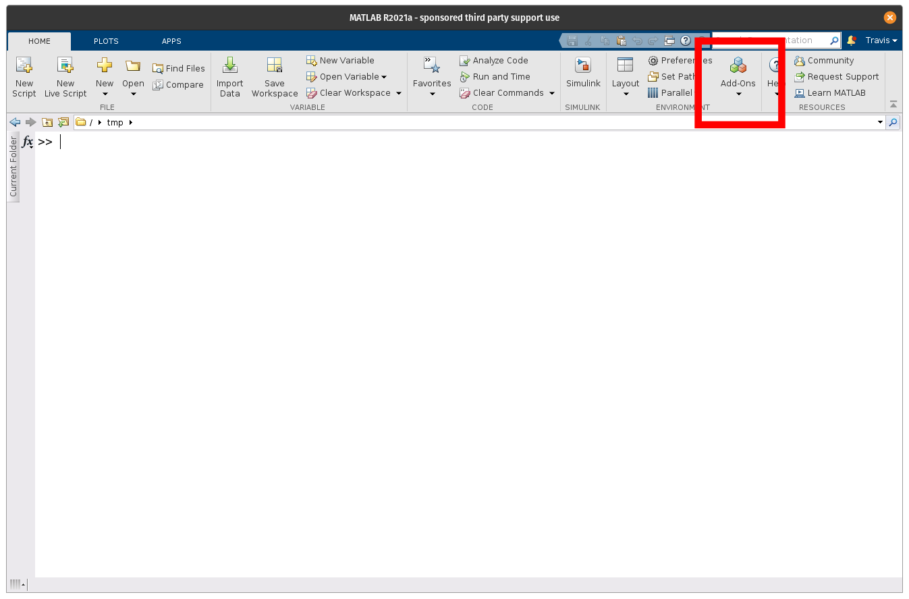
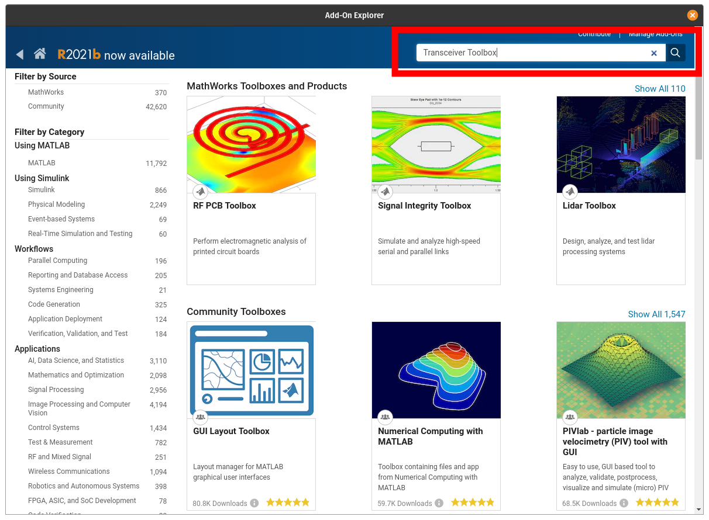
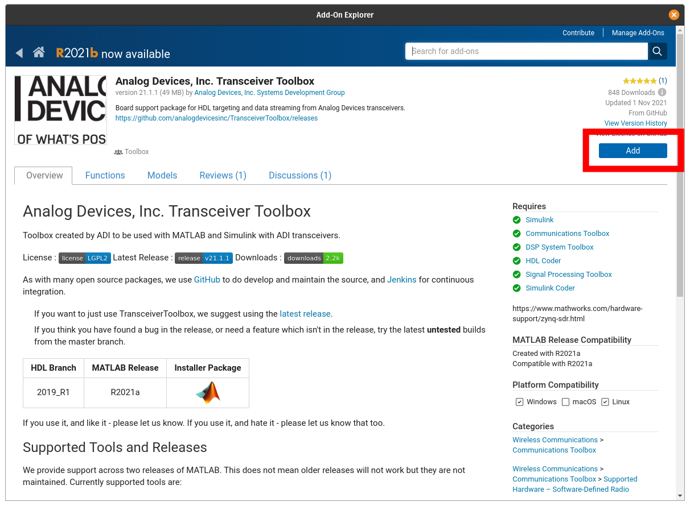

Installation
Dependencies
The toolbox has different dependencies based on the features required. These are broken down into the base dependencies for running models, data stream and control, and HDL code generation.
Simulation Models
The simulation models for the different components can be used in either MATLAB or Simulink through the MATLAB System block. To run the available models requires the following toolboxes from MathWorks:
Data Streaming with Hardware
The base dependencies for the toolbox requires libiio and the libiio MATLAB bindings. There are three options for this install with different required MathWorks Toolboxes:
Communications Toolbox Support Package for Xilinx Zynq-Based Radio
Communications Toolbox
Signal Processing Toolbox™
DSP System Toolbox™
Communications Toolbox Support Package for Analog Devices ADALM-Pluto Radio
Communications Toolbox
Signal Processing Toolbox™
DSP System Toolbox™
libiio MATLAB Binding Standalone Installer (R2021b+)
Signal Processing Toolbox™
HDL Generation Support
To leverage HDL-Coder and the reference designs with the toolbox requires the following components:
Xilinx Vivado 2021.1
Xilinx SDK 2021.1
Simulink
High Speed Converter Toolbox Install
The High Speed Converter Toolbox itself can be installed either from:
MATLAB Versions
Before installing High Speed Converter Toolbox check the Release Page to check for the lasted supported of MATLAB. The latest version is the one which is available in Add-on Explorer, since Add-On Explorer does not currently support hosting multiple versions. If you have an older release of MATLAB, download the MLTBX installer from matching release on the Release Page.
Add-On Explorer Walkthrough
To install the toolbox from within MATLAB using the Add-On Explorer, first launch the Explorer from MATLAB’s Home tab:

Search for the toolbox:

Select High Speed Converter Toolbox from results:
Select add:
